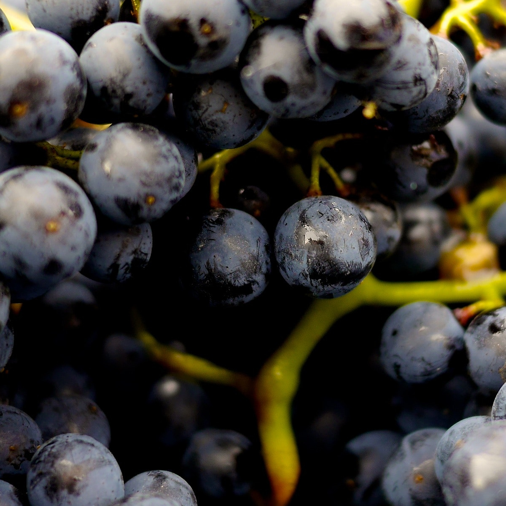
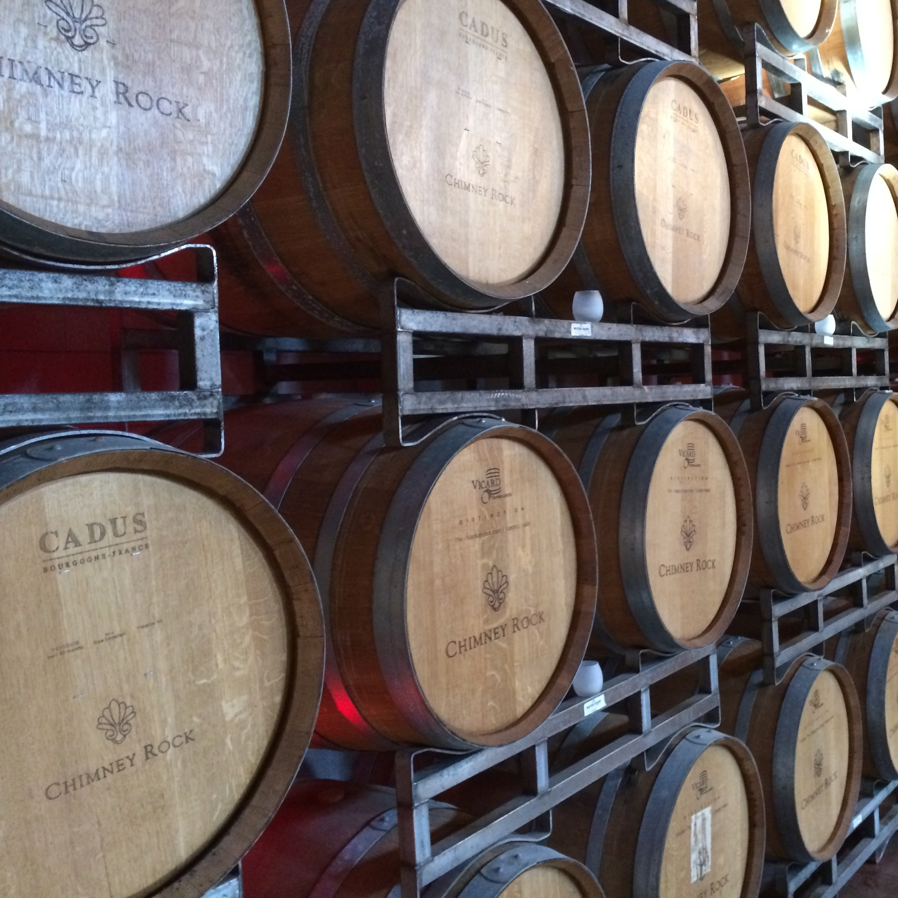
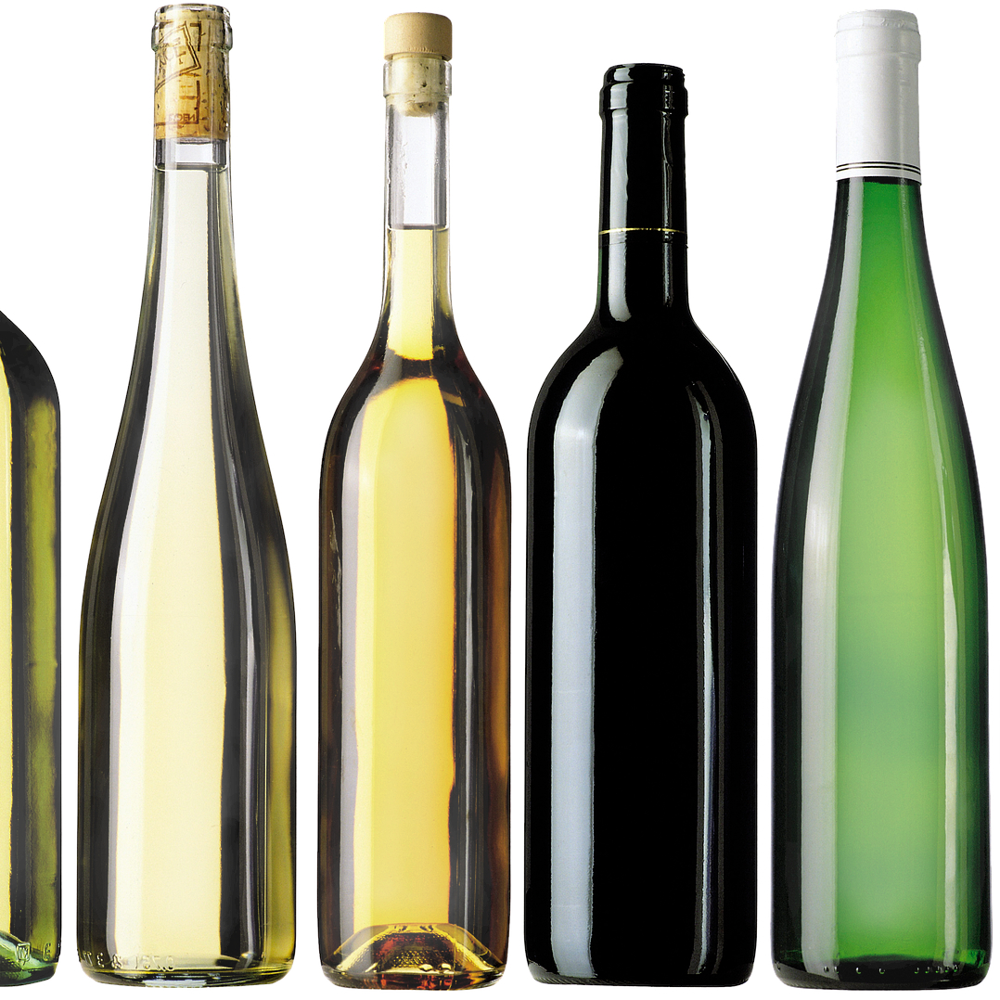
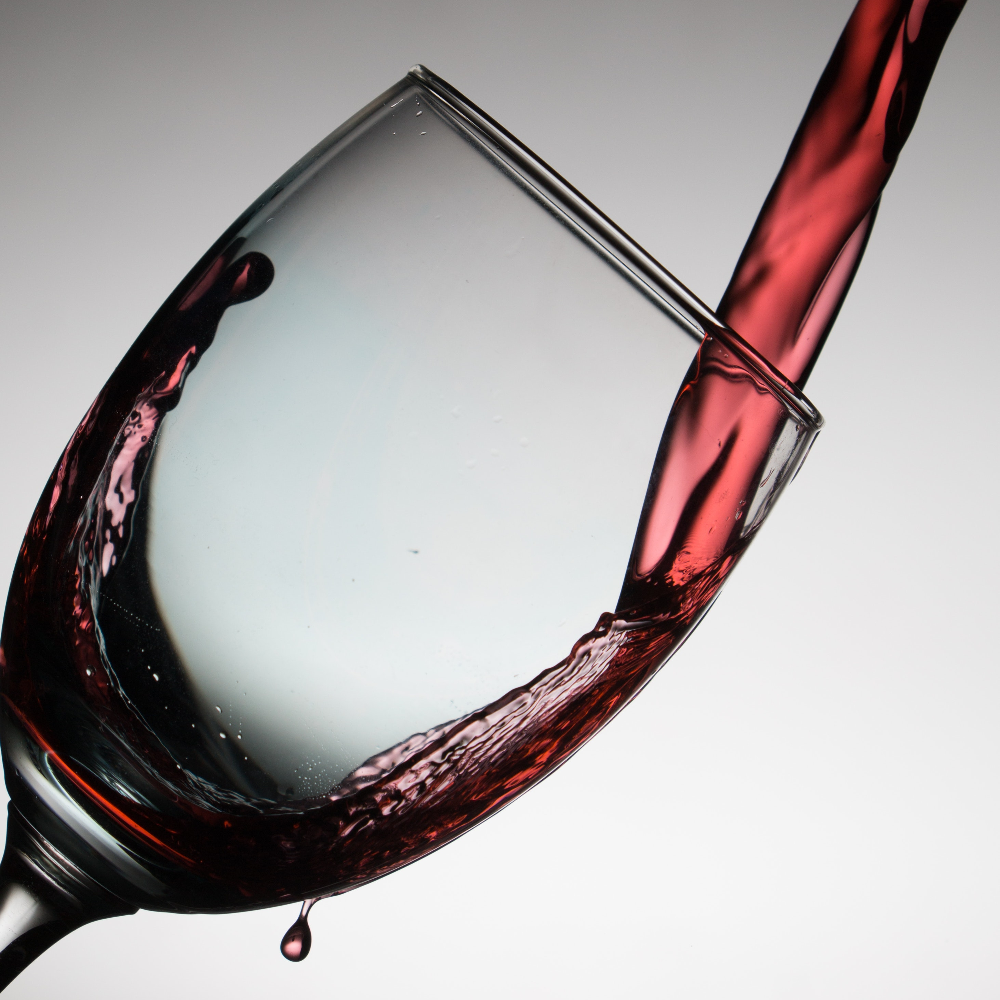

Stages of Wine

This is the header
Here is where you would type more text about your image. Include some eniticing facts to get users to scroll down deeper into your page. Do you want to know more?
These are the stages of wine production.

Wine starts its life as grapes growing on a vineyard hillside.

Grapes are crushed into juice. The juice is first fermented in barrels in the winehouse.

After the fermentation process wine is bottled for distribution.

Wine is dispensed and enjoyed in tall stem wine glasses.
A great way to become an expert on wine and the wine industry. Quickly and easily get all the knowledge to impress your friends and business associates.
- Arthur Weasley